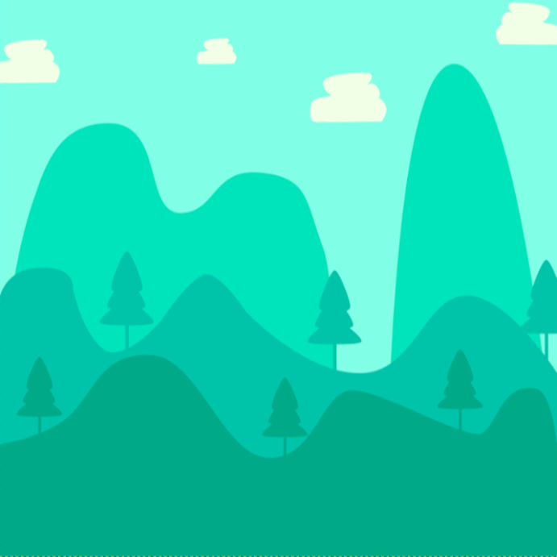

Image Creation

pixel art
A colourful pixel art landscape featuring mountains, a flowing river, and a bright sunny sky. This artwork showcases creativity through retro inspired visuals and vibrant colors

pixel artz
A playful pixel art illustration of an orange cat resting besides a small fish. This project uses simple shapes, contrasting colours, and retro game-inspired graphics to creaste a fun digital artwork.
